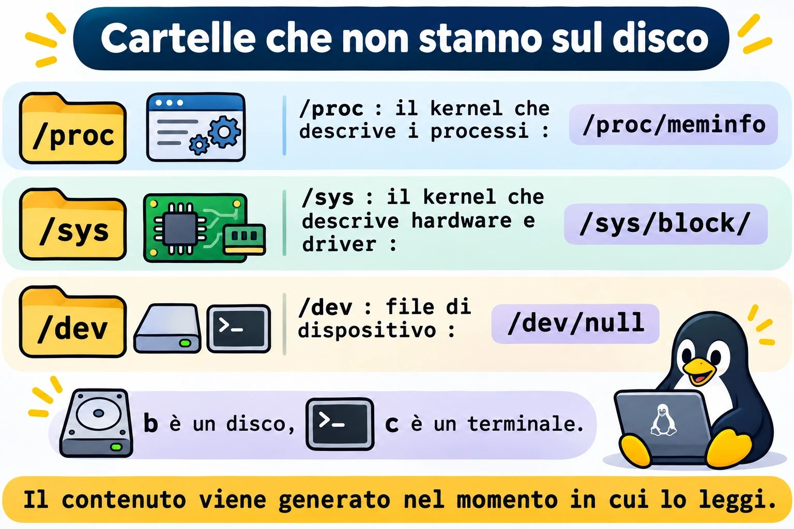
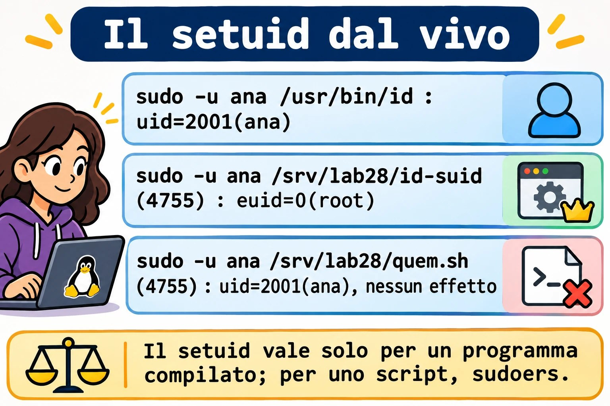
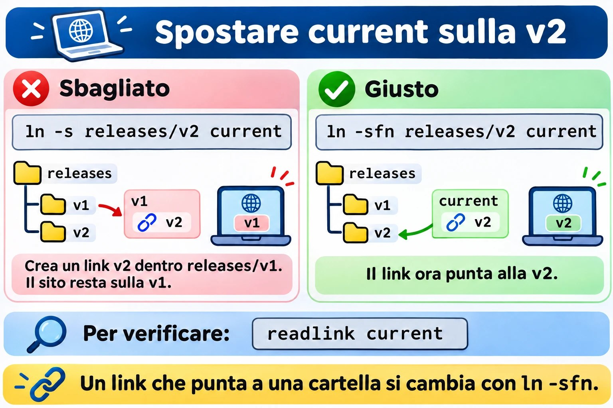
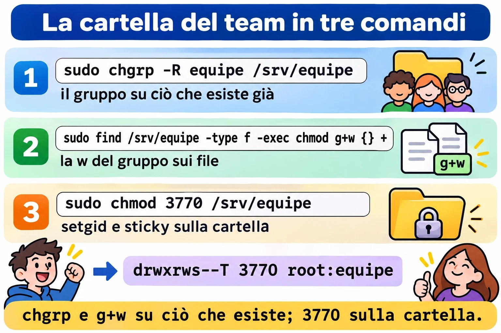

Lezione 2.8 · Directory e file speciali
Ottava e ultima lezione del Modulo 2. Nella Lezione 2.7, la directory del team è rimasta quasi pronta: Ana e Bruno entrano, leggono e scrivono, ma ogni file nuovo nasce con il gruppo sbagliato, e uno dei due può cancellare il lavoro dell'altro. Oggi chiudi la questione con tre bit nascosti in ls -l: il setgid, che fa sì che la directory dia il gruppo ai file nuovi, lo sticky, che impedisce a uno di cancellare il file dell'altro, e il setuid, che spiega perché Ana riesce a cambiare la propria password in un file che solo root può modificare. Poi impari i due tipi di link, che stanno sotto ogni deploy con "rollback in un secondo", e fai un giro in /proc, /sys e /dev, le directory che sembrano file e sono il kernel che parla. Alla fine, la sfida del modulo: la directory /srv/equipe che funziona davvero, su entrambe le VM.
| Scheda | Lezione 2.8 |
|---|---|
| Modulo | M2 · Sistema, utenti e permessi, lezione 8 di 8 |
| Quando | Settimana 5 |
| Alla fine sei in grado di | Spiegare e usare lo sticky bit, il setuid e il setgid, su file e directory; leggere s, S, t e T in ls -l; montare una directory di collaborazione in cui ogni file nuovo è del gruppo e nessuno cancella il file dell'altro; trovare i programmi con setuid di un server; creare hard link e link simbolici e prevedere cosa succede quando l'originale sparisce; cambiare un link di deploy senza interruzioni; leggere informazioni di sistema in /proc, /sys e /dev |
| Prerequisiti | Lezione 2.7 (triple, ottale, chmod, chgrp, umask, namei -l; la directory /srv/equipe a 770 root:equipe sulle due VM e notas-bruno.txt con il gruppo sbagliato su rocky-lab); Lezione 2.6 (Ana, Bruno e il gruppo equipe); Lezione 2.5 (sudo e le regole di sudoers) |
| Durata | Circa 2h30 |
| Snapshot | m2a8-inicio e m2a8-fim su entrambe le VM |
1 · Riscaldamento
Tre domande, a memoria. Scrivi le risposte; le Soluzioni le verificano alla fine.
/tmpèdrwxrwxrwt root root, e Ana ha lasciato lì il fileana.txtcome-rw-rw-rw-. Scommessa: Bruno riesce a cancellarlo?ls -l /usr/bin/passwdmostra-rwsr-xr-x root root, e/etc/shadowpuò essere modificato solo da root. Eppure Ana eseguepasswde la sua password cambia in/etc/shadow. Scommessa: come?- Hai un file
relatorio.txte crei un link verso di esso. Poi cancellirelatorio.txt. Scommessa: il contenuto resta accessibile dal link?
2 · Perché conta
I tre bit e i link compaiono in ticket che sembrano non avere niente a che fare con i permessi:
| La richiesta | La risposta sbagliata | Cosa provoca |
|---|---|---|
| "Ogni volta che Bruno crea un file nella directory del team, Ana non riesce a modificarlo" | Un cron che esegue chmod -R 777 ogni minuto | Un minuto di finestra, la directory aperta all'intera macchina e il problema che torna sul file successivo |
| "Qualcuno ha cancellato il foglio di calcolo della contabilità nella directory condivisa" | Togliere la w a tutti nella directory | Nessuno riesce più a creare nulla; il team comincia a mandare i file per e-mail |
| "Lo script di backup deve girare come root, ma lo esegue l'operatore" | chmod u+s backup.sh | Non funziona (Linux ignora il setuid sugli script), e chi riprova con una copia di bash crea una porta sul retro |
| "Il sito è tornato da solo alla versione vecchia" o "il sito è andato offline durante il deploy" | Cancellare e ricreare a mano il link current | Un istante senza link, o un link creato dentro la directory sbagliata |
"Il disco si è riempito, ma du non trova il file" | Riavviare il server | Il file cancellato era ancora aperto da un processo; /proc mostrava quale |
Chi risolve davvero sa leggere una s o una t al posto della x, sa cos'è un inode e sa che /proc è il kernel che risponde a domande. È questo che alleni oggi.
3 · Modello mentale
Il modo di un file ha quattro cifre in ottale, non tre. La prima, che quasi sempre è
0e per questo sparisce, contiene tre bit speciali: setuid (4), setgid (2) e sticky (1). Non hanno una colonna propria inls -l: ognuno compare al posto dellaxdi una tripla.
especiais dono grupo outros
octal: 3 7 7 0 chmod 3770
bits: 0 1 1 rwx rwx ---
│ │ └─ sticky (1) ──────────────┐
│ └─── setgid (2) ───────┐ │
└───── setuid (4) ─┐ │ │
▼ ▼ ▼
ls -l: d rwx rws --T /srv/equipe
│ │
s minúsculo = bit + x ──┘ └── T maiúsculo = bit sem x
S maiúsculo = bit sem x t minúsculo = bit + x
O que cada um faz:
num arquivo executável numa pasta
setuid (4) roda com o UID do DONO (ignorado no Linux)
setgid (2) roda com o GID do GRUPO arquivo novo herda o GRUPO da pasta
sticky (1) (ignorado no Linux) só o dono do arquivo apaga ou renomeiaIl secondo modello riguarda i link. Il nome di un file non è il file: è una voce nella directory che punta a un inode, e l'inode punta ai dati.
pasta /srv/lab28/links
┌──────────────────────┬────────┐
│ nome │ inode │
├──────────────────────┼────────┤ ┌──────────────┐ ┌───────────────┐
│ config.conf │ 131077 │──┬───▶ │ inode 131077 │───▶ │ dados: │
│ config-fisico.conf │ 131077 │──┘ │ dono, modo, │ │ porta=8080 │
│ config-simbolico ────┼────────┼──┐ │ links: 2 │ └───────────────┘
└──────────────────────┴────────┘ │ └──────────────┘
│
└──▶ um inode próprio, cujo conteúdo é só o
TEXTO "config.conf": um caminho, procurado
de novo a cada usoL'hard link è un secondo nome per lo stesso inode: cancellare uno dei nomi non cancella i dati, perché il kernel libera l'inode solo quando il contatore dei link arriva a zero e nessun processo lo tiene aperto. Il link simbolico è un biglietto con un indirizzo: se l'indirizzo smette di esistere, il biglietto resta lì, puntando al nulla.

4 · Concetto a livelli
Essenziale
Lo sticky bit, sulle directory. In una directory con w per più persone, chiunque può cancellare o rinominare qualsiasi file, perché cancellare è scrivere nella directory (Lezione 2.7). Con lo sticky bit, solo tre account cancellano o rinominano un file: il proprietario del file, il proprietario della directory e root. È ciò che protegge /tmp, dove scrivono tutti:
stat -c '%A %a %U:%G %n' /tmp /var/tmpdrwxrwxrwt 1777 root:root /tmp
drwxrwxrwt 1777 root:root /var/tmpLo sticky non cambia chi legge o scrive il contenuto del file: questo resta con le triple del file. Cambia solo chi cancella e chi rinomina.
Il setuid, sugli eseguibili. Normalmente, un programma gira con l'UID di chi l'ha chiamato. Con il setuid, gira con l'UID del proprietario del file. passwd è di root e ha il setuid: quando Ana lo esegue, il processo ha l'UID effettivo di root e riesce a scrivere in /etc/shadow. passwd stesso garantisce che lei cambi solo la sua password. Per questo un programma con setuid di root è un punto delicato: qualsiasi falla diventa accesso di root.
ls -l /usr/bin/passwd /usr/bin/sudo /usr/bin/suTutti e tre mostrano -rwsr-xr-x e il proprietario root. La s al posto della x del proprietario è il setuid.
Il setgid, sulle directory. Nella Lezione 2.7, ogni file nuovo in /srv/equipe nasceva con il gruppo personale di chi lo creava. Con il setgid sulla directory, ogni file nuovo nasce con il gruppo della directory, e ogni sottodirectory nuova nasce con il gruppo e con il setgid stesso. È il bit che trasforma una directory comune in una directory di team.
Il setgid, sugli eseguibili. Il programma gira con il GID del gruppo del file. Su Debian, crontab è -rwxr-sr-x root crontab: gira con il gruppo crontab e, per questo, riesce a scrivere nella directory dove stanno le tabelle di cron di ogni persona, che solo quel gruppo raggiunge.
Come attivare e disattivare. In modo simbolico, u+s è setuid, g+s è setgid, o+t (o +t) è sticky; con - al posto di +, disattiva. In ottale, la quarta cifra va davanti:
| Comando | Risultato su una directory rwxrwx--- |
|---|---|
chmod g+s pasta | drwxrws--- (2770) |
chmod +t pasta | drwxrwx--T (1770) |
chmod 3770 pasta | drwxrws--T: setgid e sticky |
chmod g-s,-t pasta | drwxrwx--- (770) |
Minuscola o maiuscola. La s e la t minuscole dicono "il bit speciale è attivo e anche la x di quella tripla". La S e la T maiuscole dicono "il bit è attivo e la x no". Su un eseguibile, S quasi sempre è un errore: un setuid senza x per il proprietario non serve a niente. In una directory di team come drwxrws--T, la T è normale e lo sticky funziona: gli altri non hanno x, ma lo sticky protegge chi sta dentro, cioè il gruppo.
I due link.
ln config.conf config-fisico.conf # hard link: un altro nome per lo stesso inode
ln -s config.conf config-simbolico # link simbolico: un file che contiene un percorso
ls -lils -li mostra il numero dell'inode nella prima colonna e il contatore dei link dopo il modo. L'hard link ha lo stesso inode dell'originale e il contatore sale a 2. Il simbolico ha un inode proprio, comincia con l e mostra la freccia: config-simbolico -> config.conf.
| Hard link | Link simbolico | |
|---|---|---|
| Cos'è | Un altro nome per lo stesso inode | Un file che contiene un percorso |
| Hanno cancellato l'originale | I dati restano, dall'altro nome | Il link resta rotto: No such file or directory |
| Per le directory | Non si può | Si può |
| Tra file system (altro disco, altra partizione) | Non si può | Si può |
| Permessi | Quelli dell'inode, che sono gli stessi dell'originale | Il link è sempre lrwxrwxrwx; conta il modo della destinazione |
| Uso tipico | Backup incrementali che non duplicano file uguali | current -> releases/v2, /etc/localtime, /bin -> usr/bin |
Intermedio
Il setgid non ripara il passato. Attivare g+s su una directory riguarda solo ciò che viene creato dopo. File e sottodirectory che esistevano già mantengono il gruppo e il modo che avevano. Per convertire una vecchia directory in directory di team, sono quattro passi, sempre gli stessi:
sudo chgrp -R equipe /srv/equipe # il gruppo su tutto
sudo chmod -R g+rwX /srv/equipe # il gruppo legge e scrive; directory attraversabili
sudo find /srv/equipe -type d -exec chmod g+s {} + # setgid su ogni directory, non solo su quella in cima
sudo chmod +t /srv/equipe # sticky, se nessuno deve cancellare quello dell'altroIl setgid dà il gruppo, e l'umask dà la w. Il file nuovo eredita il gruppo della directory, ma il modo continua a venire dall'umask di chi l'ha creato. Con umask 022, il file nasce rw-r--r--, del gruppo equipe, e il resto del gruppo può solo leggere. La directory di team funziona per intero solo quando i membri hanno umask 002 (il valore comune per utenti con gruppo personale, che hai misurato nella Lezione 2.7) o quando la directory ha una ACL predefinita (Lezione 8.5). Ricorda anche che sudo unisce l'umask di chi l'ha chiamato con 0022: un file creato con sudo -u ana nasce senza w per il gruppo, a meno che il comando non definisca l'umask. Per questo, nel lab, i test portano umask 002 esplicito.
Il chmod numerico e i bit speciali sulle directory. Nel chmod GNU, che è quello delle due VM, un modo numerico di tre cifre non disattiva il setuid né il setgid di una directory: chmod 770 su una directory 2770 lascia 2770. Lo sticky, al contrario, viene disattivato. Per disattivare il setgid di una directory, usa il simbolico (chmod g-s) o uno zero in più davanti (chmod 00770). Sui file, il modo numerico vale esattamente come è stato scritto. Nel dubbio, verifica con stat dopo.
Il setuid è ignorato sugli script. Il kernel rispetta il setuid e il setgid solo nei programmi compilati. In uno script (#!/bin/bash), il bit può anche essere attivo e comparire rws, ma l'interprete gira con l'UID di chi l'ha chiamato. Per lasciare che una persona esegua uno script come root, la strada è una regola in sudoers per quello script (Lezione 2.5).
Percorso relativo o assoluto nel link simbolico. Il link conserva il testo esatto che hai scritto. Un link relativo (ln -s releases/v2 current) viene risolto a partire dalla directory dove si trova il link, e continua a funzionare se l'intero albero cambia posto. Un link assoluto (ln -s /srv/app/releases/v2 current) funziona da qualsiasi posto, ma si rompe se /srv/app cambia nome. L'errore classico è creare il link relativo pensando alla directory in cui ti trovi, e non alla directory del link:
cd /srv
ln -s app/releases/v2 app/current # il link cerca /srv/app/app/releases/v2: rotto
ln -s releases/v2 app/current # il link cerca /srv/app/releases/v2: giustoCambiare un link che punta a una directory. Se current è un link a una directory, ln -s releases/v1 current non cambia il link: poiché current "è" una directory, ln crea un link nuovo dentro di essa, in releases/v2/v1. Per cambiare il link stesso, usa ln -sfn: il -f sostituisce, e il -n dice di trattare current come il link, senza entrarci.
/proc, /sys e /dev. Le tre directory sono file system che non stanno su disco:
| Directory | Tipo (findmnt) | Cos'è | Esempi |
|---|---|---|---|
/proc | proc | Il kernel che descrive processi e sistema | /proc/cpuinfo, /proc/meminfo, /proc/<PID>/, /proc/sys/ (i parametri di sysctl) |
/sys | sysfs | Il kernel che descrive hardware e driver | /sys/class/net/<placa>/address, /sys/block/ |
/dev | devtmpfs | File di dispositivo: leggere e scrivere su di essi significa parlare con l'hardware o con il kernel | /dev/sda, /dev/null, /dev/zero, /dev/urandom |
ls -l /proc/meminfo mostra dimensione 0, e un cat mostra decine di righe: il contenuto viene generato nel momento in cui leggi. In /dev, la prima lettera del modo dice il tipo: b è dispositivo a blocchi (dischi), c è a caratteri (terminali, /dev/null). Dove un file comune mostrerebbe la dimensione, ls -l mostra due numeri, il major e il minor, che dicono al kernel quale driver e quale dispositivo.
/tmp e /var/tmp. Entrambi hanno sticky e 1777. /var/tmp esiste per ciò che deve sopravvivere a un reboot; /tmp può essere un tmpfs, in memoria, e viene ripulito al boot o per età. A ripulire è systemd-tmpfiles, con le regole di /usr/lib/tmpfiles.d/tmp.conf. Non tenere mai in /tmp ciò che non accetti di perdere.


Ponte Windows
| In Windows | In Linux | Differenza che conta |
|---|---|---|
| Permesso NTFS "Elimina" separato da "Scrivi" | Lo sticky bit sulla directory | In Windows neghi "Elimina" per persona; in Linux, lo sticky vale per tutti in una volta: ognuno cancella solo ciò che è suo |
| Ereditarietà dei permessi dalla cartella ai file nuovi | Il setgid sulla directory (solo il gruppo) e la ACL predefinita (Lezione 8.5) | NTFS eredita l'intera ACL; il setgid eredita solo il gruppo, e il modo viene dall'umask |
| "Esegui come amministratore" e UAC | sudo, e il setuid in pochi programmi di sistema | Il setuid è del file, non della persona: vale per chiunque esegua quel programma |
Collegamento .lnk | Niente: il .lnk è un file che capisce solo Explorer | Un link simbolico funziona per qualsiasi programma, anche da terminale |
mklink /D e junction | ln -s | Stessa idea; su Linux qualsiasi utente lo crea, senza privilegi speciali |
mklink /H | ln (hard link) | Stessa idea: due nomi, un file |
| Task Manager, WMI | /proc | Su Linux, l'informazione è un file che leggi con cat e grep |
| Gestione dispositivi | /sys e /dev | Il dispositivo è un file; lsblk e ip link leggono /sys per te |
Avanzato
Le protezioni del kernel nelle directory con sticky. Tre parametri di sysctl irrobustiscono /tmp contro attacchi classici, in cui qualcuno crea prima un link o un file con il nome che un programma di root userà:
sudo sysctl fs.protected_symlinks fs.protected_hardlinks fs.protected_regularCon protected_symlinks = 1, in una directory con sticky e scrivibile da tutti, un link simbolico viene seguito solo se è dello stesso proprietario di chi lo segue, o del proprietario della directory. Con protected_hardlinks = 1, nessuno crea un hard link verso un file di un'altra persona che non possa leggere e scrivere. Con protected_regular = 1, nessuno apre con creazione (> o >>) un file di un'altra persona in una directory con sticky e scrivibile da tutti, come /tmp, anche se il file è 666. Con 2, la regola vale anche per le directory con sticky scrivibili solo dal gruppo, come la directory di team di questa lezione. Annota i valori delle due VM nel Passo 0.
Montare senza setuid. L'opzione nosuid in mount (e in /etc/fstab) fa sì che il kernel ignori il setuid e il setgid di tutto ciò che sta in quel file system. È la configurazione giusta per chiavette USB, /tmp su partizione propria e directory di upload. La Lezione 5.x torna su fstab.
Capabilities, il setuid a fette. Invece di dare root per intero a un programma, il kernel permette di darne solo una parte, come "aprire porte sotto la 1024" o "inviare pacchetti ICMP". getcap -r /usr/bin 2>/dev/null mostra quali programmi lo usano. Un audit del setuid fatto bene guarda entrambe le liste.
Il disco pieno che du non trova. Un file cancellato, ma ancora aperto da un processo, continua a occupare spazio: l'inode viene liberato solo quando sparisce l'ultimo nome e l'ultimo processo lo chiude. /proc mostra chi lo tiene:
sudo find /proc/[0-9]*/fd -lname '*(deleted)' -printf '%p -> %l\n' 2>/dev/nullRiavviare il servizio che tiene il file libera lo spazio senza riavviare il server.
5 · Rocky × Debian
| Cosa | rocky-lab | debian-lab | Come verificare |
|---|---|---|---|
/tmp | Di solito è una directory sul disco del sistema | Da Debian 13 in poi, tmpfs in memoria; prima, directory sul disco | findmnt /tmp |
Pulizia di /tmp e /var/tmp | Per età, da systemd-tmpfiles | Dipende dalla versione: al boot, per età, o entrambi | cat /usr/lib/tmpfiles.d/tmp.conf |
crontab | -rwsr-xr-x root root: setuid di root | -rwxr-sr-x root crontab: setgid del gruppo crontab | ls -l /usr/bin/crontab |
| Quantità di programmi con setuid o setgid | Alcune decine | Alcune decine, non sempre gli stessi | sudo find / -xdev -type f -perm /6000 | wc -l |
/bin, /sbin, /lib | Link simbolici verso usr/bin, usr/sbin, usr/lib | Gli stessi link ("/usr unificato") | ls -ld /bin /sbin /lib |
/etc/localtime | Link simbolico verso /usr/share/zoneinfo/... | Link simbolico verso /usr/share/zoneinfo/... | ls -l /etc/localtime |
Punto dopo il modo in ls -l | Compare (contesto SELinux) | Non compare | ls -l /usr/bin/passwd |
| Nome del disco | sda o vda, a seconda del controller della VM su Proxmox | Lo stesso criterio | lsblk |
Le regole dei tre bit, dei link e di /proc, /sys e /dev sono del kernel e di coreutils, e sono le stesse sulle due VM. Ciò che cambia è quale programma di sistema usa ciascun bit, e come ogni distribuzione tratta /tmp.
6 · Lab guidato
Il formato è lo stesso della Lezione 2.7: sei student, con sudo, e provi tutto come Ana e come Bruno con sudo -u. Gli esperimenti stanno in /srv/lab28. Il Passo 7 è la sfida del modulo, sulla vera /srv/equipe, su entrambe le VM. Ricorda che student non è nel gruppo equipe: per guardare dentro /srv/equipe usi sudo.

Passo 0 · Snapshot, percorso e protezioni del kernel
Su Proxmox, crea lo snapshot m2a8-inicio di entrambe le VM. Su rocky-lab:
eval "$(ssh-agent -s)"; ssh-add
ssh -o BatchMode=yes deb hostname
sudo stat -c '%A %a %U:%G %n' /srv/equipe /srv/equipe/*drwxrwx--- 770 root:equipe /srv/equipe
stat: cannot statx '/srv/equipe/*': No such file or directoryLa directory compare, i file no. sudo è a posto; il problema è chi espande il *. A sostituire /srv/equipe/* con l'elenco dei file è la tua shell, che gira come student, prima che sudo parta. student non è nel gruppo equipe e non legge la directory, quindi la shell non trova nulla e passa il testo /srv/equipe/* così com'è. Il comando di verifica della fine della Lezione 2.7 inciampa anche lui qui. I due modi giusti: lasciare che sia root a espandere, con sudo sh -c '...', oppure non usare *, con un find eseguito da root. Questo lab usa find, che mostra il modo a quattro cifre con %m:
sudo find /srv/equipe -maxdepth 1 -printf '%M %m %u:%g %p\n'
sudo sysctl fs.protected_symlinks fs.protected_hardlinks fs.protected_regular
ssh -t deb 'sudo sysctl fs.protected_symlinks fs.protected_hardlinks fs.protected_regular'/srv/equipe deve comparire come drwxrwx--- 770 root:equipe, con planilha.csv in ana:equipe. Su rocky-lab compare anche notas-bruno.txt, ed è in bruno:bruno: è il problema rimasto dalla Lezione 2.7. Annota i tre valori di sysctl sulle due VM. Il comune è 1, 1 e 1. Se protected_regular esce 2, tienilo presente: cambia un test del Passo 7.
Crea la directory degli esperimenti:
sudo mkdir -p /srv/lab28
sudo chmod 755 /srv/lab28Passo 1 · Lo sticky bit in /tmp
Ana lascia un file in /tmp, aperto a tutti:
sudo -u ana bash -c 'echo "rascunho da Ana" > /tmp/ana-lab28.txt; chmod 666 /tmp/ana-lab28.txt'
stat -c '%A %U:%G %n' /tmp /tmp/ana-lab28.txtdrwxrwxrwt root:root /tmp
-rw-rw-rw- ana:ana /tmp/ana-lab28.txtIl file è 666 e /tmp dà rwx a tutti. Secondo la regola della Lezione 2.7, cancellare è scrivere nella directory, e tutti scrivono in /tmp.
Decidi 1 · Bruno esegue rm -f /tmp/ana-lab28.txt. Cosa succede?
- A) Il file sparisce, perché
/tmpèrwxper tutti - B)
Operation not permitted, e il file resta - C)
rmchiede conferma, perché il file non è suo - D) Il file sparisce, perché il file stesso è
666
Scegli un'opzione prima di continuare.
sudo -u bruno rm -f /tmp/ana-lab28.txt
ls -l /tmp/ana-lab28.txt| Se hai scelto | Risultato | Perché |
|---|---|---|
| A | ❌ Sbagliato | Sarebbe vero senza la t in fondo al modo. Lo sticky bit cambia la regola del cancellare: oltre alla w sulla directory, bisogna essere il proprietario del file, il proprietario della directory o root. |
| B | ✅ Giusto | rm: cannot remove '/tmp/ana-lab28.txt': Operation not permitted. Lo sticky protegge il file di Ana, anche se aperto a tutti. Nota che il messaggio non è Permission denied: è lo sticky che parla, non le triple. |
| C | ❌ Sbagliato | Il -f disattiva qualsiasi domanda di rm. E la domanda non decide niente: a decidere è il kernel, che rifiuta comunque. |
| D | ❌ Sbagliato | Il modo del file non decide mai chi cancella: è affare della directory. Il 666 lascia che Bruno scriva nel contenuto, se le protezioni del kernel lo permettono, ma non che cancelli. |
Da ricordare: Operation not permitted quando cancelli in una directory dove hai w è quasi sempre lo sticky bit. Controlla la t in fondo al modo della directory.
Ora la prova al contrario: il proprietario della directory e root cancellano qualsiasi cosa. Cancella il file di Ana come root, che è il proprietario di /tmp:
sudo rm -f /tmp/ana-lab28.txtPasso 2 · Il setuid, dal vivo
Elenca i programmi con setuid di root nelle directory dei programmi di sistema, sulle due VM:
find /usr/bin /usr/sbin -perm -4000 -user root -printf '%M %u %p\n' 2>/dev/null
ssh deb "find /usr/bin /usr/sbin -perm -4000 -user root -printf '%M %u %p\n' 2>/dev/null"-perm -4000 significa "con il bit 4000 attivo, qualunque siano gli altri". Riconoscerai passwd, sudo, su, mount, umount, chage, newgrp, gpasswd. Tutti devono fare, per una persona comune, una sola cosa che solo root può fare, e ognuno si occupa di limitare ciò che lei ne fa. Confronta le due liste: non sono uguali, e la differenza è argomento della sezione Rocky × Debian.
Ora guarda il setuid cambiare l'identità di un processo. Una copia di id con setuid di root, solo per l'esperimento:
sudo cp /usr/bin/id /srv/lab28/id-suid
sudo chmod 4755 /srv/lab28/id-suid
ls -l /srv/lab28/id-suid
sudo -u ana /usr/bin/id
sudo -u ana /srv/lab28/id-suid-rwsr-xr-x. 1 root root ... /srv/lab28/id-suid
uid=2001(ana) gid=2001(ana) groups=2001(ana),2000(equipe)
uid=2001(ana) gid=2001(ana) euid=0(root) groups=2001(ana),2000(equipe)euid=0(root) è l'UID effettivo, quello che il kernel usa per decidere i permessi. Ana resta Ana nell'uid, ma quel processo ha i poteri di root. Con id, che mostra solo informazioni, è innocuo. Con una copia di bash, sarebbe una shell di root per chiunque la eseguisse. È esattamente ciò che un attaccante cerca su un server.
Ora lo stesso bit su uno script:
printf '#!/bin/bash\nid\n' | sudo tee /srv/lab28/quem.sh >/dev/null
sudo chmod 4755 /srv/lab28/quem.sh
ls -l /srv/lab28/quem.shDecidi 2 · Ana esegue /srv/lab28/quem.sh. Cosa mostra la riga?
- A)
euid=0(root), comeid-suid - B)
uid=2001(ana), senzaeuid: il setuid non ha avuto effetto - C)
Permission denied, perché lo script è di root - D)
uid=0(root): l'intero script gira come root
Scegli un'opzione prima di continuare.
sudo -u ana /srv/lab28/quem.sh| Se hai scelto | Risultato | Perché |
|---|---|---|
| A | ❌ Sbagliato | Sarebbe una grave falla di sicurezza, ed è per questo che Linux ha smesso di rispettare il bit sugli script. Il kernel esegue /bin/bash, che non ha setuid, e bash legge lo script. |
| B | ✅ Giusto | ls -l mostra rws, e il bit non fa nulla. Per far eseguire uno script come root a qualcuno, lo strumento è una regola in sudoers (Lezione 2.5), che registra anche chi l'ha eseguito e quando. |
| C | ❌ Sbagliato | Lo script è 4755: gli altri hanno r-x, e Ana legge ed esegue. Essere di root non impedisce a nessuno di eseguire un programma. |
| D | ❌ Sbagliato | Né l'UID reale né quello effettivo cambiano. Il setuid sugli script viene ignorato del tutto. |
Da ricordare: il setuid funziona solo sui programmi compilati. Quando ti chiedono "uno script che l'operatore esegua come root", la risposta è sudoers, mai chmod u+s.
Ripulisci l'esperimento. Un programma con setuid di root dimenticato in una directory è il genere di cosa che un audit trova, e con ragione:
sudo rm /srv/lab28/id-suid /srv/lab28/quem.sh

Passo 3 · Il setgid su una directory
Una directory di progetto del gruppo, ancora senza nessun bit speciale:
sudo mkdir /srv/lab28/proj
sudo chgrp equipe /srv/lab28/proj
sudo chmod 770 /srv/lab28/proj
sudo -u ana bash -c 'umask 002; touch /srv/lab28/proj/antes.txt'
sudo stat -c '%A %U:%G %n' /srv/lab28/proj /srv/lab28/proj/antes.txtantes.txt nasce ana:ana: il gruppo personale di Ana. È il problema di notas-bruno.txt che si ripete. Ora attiva il setgid e crea un altro file e una sottodirectory:
sudo chmod g+s /srv/lab28/proj
sudo -u ana bash -c 'umask 002; touch /srv/lab28/proj/depois.txt; mkdir /srv/lab28/proj/sub'
sudo find /srv/lab28/proj -printf '%M %m %u:%g %p\n'drwxrws--- 2770 root:equipe /srv/lab28/proj
-rw-rw-r-- 664 ana:ana /srv/lab28/proj/antes.txt
-rw-rw-r-- 664 ana:equipe /srv/lab28/proj/depois.txt
drwxrwsr-x 2775 ana:equipe /srv/lab28/proj/subTre cose da leggere lì. La directory mostra rws nel gruppo: setgid con x. depois.txt è nato del gruppo equipe, senza che nessuno eseguisse chgrp. E sub è nata con il gruppo e con il setgid stesso (2775): la regola scende da sola lungo l'albero.
Decidi 3 · Bruno deve modificare antes.txt. Cosa succede adesso, con la directory già a 2770?
- A) Funziona: il setgid ha corretto il gruppo di tutti i file della directory
- B) Fallisce:
antes.txtrestaana:ana, e Bruno cade in altri,r-- - C) Funziona: Bruno è nel gruppo della directory, e questo basta
- D) Fallisce: con il setgid, solo il proprietario della directory modifica
Scegli un'opzione prima di continuare.
sudo -u bruno bash -c 'echo "linha do Bruno" >> /srv/lab28/proj/antes.txt'| Se hai scelto | Risultato | Perché |
|---|---|---|
| A | ❌ Sbagliato | Il setgid agisce solo alla creazione dei file. Ciò che esisteva già resta com'era. È l'errore più comune quando si converte una vecchia directory. |
| B | ✅ Giusto | Permission denied. Il file è 664 ana:ana, e Bruno non è Ana e non è nel gruppo ana. La riparazione è sul file: sudo chgrp equipe antes.txt. |
| C | ❌ Sbagliato | Il gruppo della directory decide chi entra e crea; il gruppo del file decide chi ci scrive. Sono due controlli diversi. |
| D | ❌ Sbagliato | Il setgid non restringe nulla: sceglie solo il gruppo dei file nuovi. |
Da ricordare: dopo il chmod g+s, sempre un chgrp -R su ciò che esiste già. Il setgid si occupa del futuro; il passato è affar tuo.
Ripara e verifica:
sudo chgrp equipe /srv/lab28/proj/antes.txt
sudo -u bruno bash -c 'echo "linha do Bruno" >> /srv/lab28/proj/antes.txt'
sudo cat /srv/lab28/proj/antes.txtInfine, guarda l'umask che comanda sul modo. Bruno crea un file con l'umask 022 che sudo impone:
sudo -u bruno touch /srv/lab28/proj/sem-umask.txt
sudo stat -c '%A %U:%G %n' /srv/lab28/proj/sem-umask.txtIl gruppo è giusto, equipe, e il modo è rw-r--r--: Ana legge e non scrive. Il setgid ha dato il gruppo; la w del gruppo dipende dall'umask di chi crea.
Passo 4 · Hard link e link simbolico
Ora come te stesso, in una tua directory:
sudo install -d -o student -g student /srv/lab28/links
cd /srv/lab28/links
echo "porta=8080" > config.conf
ln config.conf config-fisico.conf
ln -s config.conf config-simbolico
ls -li131077 -rw-r--r--. 2 student student 11 ... config-fisico.conf
131079 lrwxrwxrwx. 1 student student 11 ... config-simbolico -> config.conf
131077 -rw-r--r--. 2 student student 11 ... config.confI numeri degli inode saranno altri sulla tua VM; ciò che conta è la relazione. config.conf e config-fisico.conf hanno lo stesso inode e il contatore 2: sono due nomi per un solo file. Il simbolico ha un inode proprio, contatore 1, dimensione 11, che è il numero di lettere di config.conf, e il modo lrwxrwxrwx.
Cambia il contenuto da un nome e leggi dagli altri:
echo "porta=9090" > config-fisico.conf
cat config.conf config-simbolicoLe due righe mostrano porta=9090. Ora cancella l'originale.
Decidi 4 · Dopo rm config.conf, cosa mostrano cat config-fisico.conf e cat config-simbolico?
- A) Entrambi mostrano
porta=9090 - B) L'hard link mostra
porta=9090; il simbolico dàNo such file or directory - C) Entrambi danno
No such file or directory - D) L'hard link dà errore; il simbolico mostra
porta=9090, perché ha conservato una copia
Scegli un'opzione prima di continuare.
rm config.conf
cat config-fisico.conf
cat config-simbolico
ls -li| Se hai scelto | Risultato | Perché |
|---|---|---|
| A | ❌ Sbagliato | Il simbolico non punta all'inode; conserva il testo config.conf e cerca quel nome a ogni uso. Il nome è sparito. |
| B | ✅ Giusto | rm ha cancellato un nome. L'inode ne aveva due; il contatore è sceso a 1 e i dati sono rimasti. Il simbolico è diventato un link rotto: ls di solito lo mostra in rosso lampeggiante. |
| C | ❌ Sbagliato | L'hard link non dipende dal nome originale: i due nomi erano uguali in tutto, e nessuno è "l'originale" per il kernel. |
| D | ❌ Sbagliato | È il contrario. Il simbolico non conserva mai contenuto, solo un percorso. |
Da ricordare: rm cancella un nome, non un file. I dati spariscono solo quando sparisce l'ultimo nome e nessun processo li tiene aperti.
Ricrea il nome e guarda il link rotto tornare da solo:
echo "porta=7070" > config.conf
cat config-simbolicoIl simbolico mostra porta=7070, un file nuovo con lo stesso nome. L'hard link continua a mostrare porta=9090: adesso è un altro inode. Verifica con ls -li.
Infine, i due limiti dell'hard link:
ln /srv/lab28/proj pasta-fisica
ln /proc/version versao-fisicaIl primo dà hard link not allowed for directory. Il secondo dà Invalid cross-device link: /proc è un altro file system. Con -s, entrambi funzionerebbero.
Passo 5 · Il deploy con link simbolico
È il modello di quasi ogni deploy serio: ogni versione in una directory, e un link current che dice quale è online. Tornare a una versione precedente significa cambiare il link.
sudo install -d -o student -g student /srv/lab28/app
mkdir -p /srv/lab28/app/releases/v1 /srv/lab28/app/releases/v2
echo "versao 1" > /srv/lab28/app/releases/v1/index.html
echo "versao 2" > /srv/lab28/app/releases/v2/index.html
cd /srv/lab28/app
ln -s releases/v1 current
cat current/index.htmlIl sito, che leggerebbe current/index.html, mostra versao 1. È ora di pubblicare la v2. Il collega esegue ciò che sembra ovvio:
ln -s releases/v2 current
cat current/index.html
ls -l current/ releases/v1/Il sito resta sulla versione 1, ed è comparso un link v2 dentro releases/v1. Poiché current punta a una directory, ln ha trattato current come directory e ha creato il link nuovo lì dentro.
Decidi 5 · Quale comando cambia current verso la v2 in una volta sola?
- A)
rm current; ln -s releases/v2 current - B)
ln -sf releases/v2 current - C)
ln -sfn releases/v2 current - D)
cp -r releases/v2 current
Scegli un'opzione prima di continuare.
| Se hai scelto | Risultato | Perché |
|---|---|---|
| A | ⚠️ Funziona, ma | Il link viene giusto, e tra i due comandi c'è un istante senza current: su un sito vero, gli accessi di quell'istante danno errore. In un deploy automatico, se il secondo comando fallisce, il sito resta offline. |
| B | ❌ Sbagliato | Il -f sostituisce, ma senza il -n ln continua a entrare in current e crea (o sostituisce) un v2 dentro releases/v1. Lo stesso errore, ora senza messaggio. |
| C | ✅ Giusto | Il -n fa sì che ln tratti current come il link, senza seguirlo, e il -f sostituisce. Una riga, e il link punta già alla v2. |
| D | ❌ Sbagliato | Con current che è un link a una directory, cp -r copia la v2 dentro la v1. E anche senza questo, una copia non è un link: perdi il "tornare indietro in un secondo". |
Da ricordare: un link che punta a una directory si cambia con ln -sfn. Senza il -n, ln entra nella directory.
Ripara e prova il rollback:
rm releases/v1/v2
ln -sfn releases/v2 current
cat current/index.html
ln -sfn releases/v1 current
cat current/index.html
readlink currentversao 2, poi versao 1, e readlink mostra il testo conservato nel link: releases/v1. In produzione, gli strumenti di deploy lo fanno senza nessun istante senza link: creano un link nuovo con un altro nome e lo rinominano sopra current con mv -T, che cambia il nome in una sola operazione.


Passo 6 · /proc, /sys e /dev
Sulle due VM, senza sudo:
findmnt -n -o TARGET,FSTYPE /proc /sys /dev /tmp
ls -l /proc/meminfo
grep -E 'MemTotal|MemAvailable' /proc/meminfo
grep -c ^processor /proc/cpuinfo
cat /proc/loadavg
cat /proc/sys/kernel/hostnamels -l mostra dimensione 0, e grep trova le righe: il kernel genera il contenuto quando leggi. Il numero di processori è quello che hai dato alla VM su Proxmox. /proc/sys/kernel/hostname è lo stesso parametro di sysctl kernel.hostname: sysctl è solo un modo di leggere e scrivere in /proc/sys.
Ogni processo ha una directory in /proc con il suo numero. $$ è il numero della tua shell:
echo $$
ls /proc/$$
readlink /proc/$$/cwd /proc/$$/exe
ls -l /proc/$$/fdcwd è la directory in cui si trova la shell, exe è il programma, e fd mostra i file aperti: 0, 1 e 2 puntano al tuo terminale (/dev/pts/...). È così che funzionano ps, top e lsof: leggendo /proc.
Ora l'hardware tramite /sys, e i dispositivi tramite /dev:
ls /sys/class/net/
cat /sys/class/net/*/address
ls -l /dev/null /dev/zero /dev/urandom
lsblk
ls -l /dev/sd* /dev/vd* 2>/dev/null/sys/class/net elenca le schede di rete, e l'address di ciascuna è il MAC, lo stesso che compare nell'hardware della VM su Proxmox. In /dev, /dev/null è crw-rw-rw-: un dispositivo a caratteri, aperto a tutti, e al posto della dimensione compaiono due numeri (1, 3). I dischi compaiono come brw-rw---- root disk: dispositivo a blocchi, solo per root e il gruppo disk. Chi è nel gruppo disk legge l'intero disco, sotto qualsiasi permesso di file. È uno dei gruppi che non si danno mai a una persona comune.
Passo 7 · La sfida del modulo: la vera /srv/equipe
La richiesta, dalla Lezione 2.6: Ana e Bruno creano e modificano file in /srv/equipe, e nessuno dei due cancella il file dell'altro, su entrambe le VM. Su rocky-lab, lo stato adesso:
sudo find /srv/equipe -maxdepth 1 -printf '%M %m %u:%g %p\n'
sudo -u ana bash -c 'echo "editado pela Ana" >> /srv/equipe/notas-bruno.txt'
sudo -u bruno rm -fv /srv/equipe/planilha.csv
sudo ls /srv/equipeAttenzione al terzo comando: cancella il foglio, se può. Hai lo snapshot m2a8-inicio, e il foglio ha due righe che ricrei in pochi secondi. Ana non riesce a modificare notas-bruno.txt (Permission denied), e Bruno riesce a cancellare il foglio di Ana. Sono i due difetti della richiesta. Ricrea il foglio:
printf 'jan;100\nfev;200\n' | sudo -u ana tee /srv/equipe/planilha.csv >/dev/null
sudo chgrp equipe /srv/equipe/planilha.csv
sudo chmod 664 /srv/equipe/planilha.csvDecidi 6 · Quale sequenza consegna la richiesta intera?
- A)
sudo chmod -R 777 /srv/equipe - B)
sudo chmod 3770 /srv/equipe - C)
sudo chgrp -R equipe /srv/equipe,sudo find /srv/equipe -type f -exec chmod g+w {} +esudo chmod 3770 /srv/equipe - D)
sudo chmod 2770 /srv/equipeesudo chgrp -R equipe /srv/equipe
Scegli un'opzione prima di continuare.
| Se hai scelto | Risultato | Perché |
|---|---|---|
| A | ❌ Sbagliato | Ana modifica notas-bruno.txt, e qualsiasi account della macchina comincia a leggere, modificare e cancellare tutto, compreso il file dell'altro. Rompe entrambe le metà della richiesta e crea un problema nuovo. |
| B | ⚠️ Funziona, ma | I file nuovi nascono del gruppo e nessuno cancella quello dell'altro. Ma notas-bruno.txt, che esisteva già, resta bruno:bruno: Ana ancora non modifica. È la lezione del Passo 3. |
| C | ✅ Giusto | I tre problemi, un comando per ciascuno: il gruppo dei file che esistono già, la w del gruppo su di essi, e la directory con setgid (file nuovi del gruppo) e sticky (nessuno cancella quello dell'altro). |
| D | ❌ Sbagliato | Sistema il gruppo di tutto e dei file nuovi, ma non dà w al gruppo dove manca: se notas-bruno.txt è nato 644, Ana continua a non modificarlo. E, senza lo sticky, Bruno continua a cancellare il foglio di Ana. |
Da ricordare: una directory di team è chgrp e g+w su ciò che esiste, e 2770 o 3770 sulla directory. Lo sticky entra quando la richiesta dice "nessuno cancella quello dell'altro".
Applica su rocky-lab e verifica:
sudo chgrp -R equipe /srv/equipe
sudo find /srv/equipe -type f -exec chmod g+w {} +
sudo chmod 3770 /srv/equipe
sudo find /srv/equipe -maxdepth 1 -printf '%M %m %u:%g %p\n'drwxrws--T 3770 root:equipe /srv/equipe
-rw-rw-r-- 664 bruno:equipe /srv/equipe/notas-bruno.txt
-rw-rw-r-- 664 ana:equipe /srv/equipe/planilha.csvOra la prova che farebbe un auditor, i sei casi della richiesta:
sudo -u ana bash -c 'umask 002; echo "pauta" > /srv/equipe/reuniao-ana.txt'
sudo -u bruno bash -c 'echo "mar;300" >> /srv/equipe/planilha.csv'
sudo -u ana bash -c 'echo "visto pela Ana" >> /srv/equipe/notas-bruno.txt'
sudo -u bruno rm -f /srv/equipe/reuniao-ana.txt
sudo -u ana rm -f /srv/equipe/notas-bruno.txt
sudo -u ana rm -f /srv/equipe/reuniao-ana.txt
sudo find /srv/equipe -maxdepth 1 -type f -printf '%M %u:%g %p\n'
sudo cat /srv/equipe/planilha.csvL'atteso, riga per riga: Ana crea; Bruno modifica il foglio di Ana; Ana modifica le note di Bruno; Bruno non cancella il file di Ana (Operation not permitted); Ana non cancella quello di Bruno; Ana cancella il proprio file. Alla fine, il foglio ha tre righe. Se il Passo 0 ha mostrato protected_regular = 2, le due modifiche con >> sul file dell'altro falliscono, perché il kernel tratta la directory di team con sticky come /tmp. Con il valore predefinito, 1, funzionano.
Ripeti su debian-lab. Lì non esiste notas-bruno.txt, e i comandi sono gli stessi: entra con ssh deb ed esegui il blocco di applicazione e il blocco di prova. Alla fine, confronta le due VM:
sudo stat -c '%A %a %U:%G' /srv/equipe
ssh -t deb "sudo stat -c '%A %a %U:%G' /srv/equipe"Le due righe uguali, drwxrws--T 3770 root:equipe, chiudono la sfida del Modulo 2.


7 · Rompi e ripara
Guasto A · La "standardizzazione" che ha cancellato un bit
Lo scenario: un collega ha eseguito uno script di "standardizzazione dei permessi" che lascia ogni directory condivisa a 770. Su rocky-lab, Ana lascia un file e lo script passa:
sudo -u ana bash -c 'umask 002; echo "pauta de segunda" > /srv/equipe/pauta-ana.txt'
sudo chmod 770 /srv/equipeOsserva. Il giorno dopo, Ana apre un ticket: l'agenda è sparita. La prova di Bruno:
sudo -u bruno rm -fv /srv/equipe/pauta-ana.txtrm risponde removed '/srv/equipe/pauta-ana.txt'. Ieri, lo stesso comando dava Operation not permitted.
Diagnostica. Cosa è cambiato nella directory?
sudo stat -c '%A %a %U:%G %n' /srv/equipedrwxrws--- 2770 root:equipe /srv/equipeLa T in fondo è sparita, e il modo è 2770, non 770 come chiedeva lo script. Due cose da leggere lì. Lo sticky è stato disattivato: con lui se n'è andata la protezione contro la cancellazione. E il setgid è sopravvissuto, perché il chmod GNU non disattiva il setgid di una directory con un modo numerico di tre cifre (sezione Intermedio). ls -l qui non aiuterebbe molto: la differenza è una T che diventa - nell'ultimo carattere.
Decidi A · La riparazione. Cosa esegui?
- A)
sudo chmod +t /srv/equipe - B)
sudo chmod -R 3770 /srv/equipe - C)
sudo chmod 2750 /srv/equipe, perché il gruppo non possa cancellare - D)
sudo chattr +i /srv/equipe/*, perché nessuno cancelli nulla
Scegli un'opzione prima di continuare.
| Se hai scelto | Risultato | Perché |
|---|---|---|
| A | ✅ Giusto | Attiva solo il bit che è sparito. La directory torna a 3770, uguale a debian-lab. Poi, correggi lo script, o il guasto torna alla prossima esecuzione. |
| B | ❌ Sbagliato | Ripara la directory e rovina i file: diventano tutti -rwxrws--T, eseguibili, con setgid e sticky privi di senso su un file. Un -R per riparare una sola directory, come nel Guasto B della Lezione 2.7. |
| C | ❌ Sbagliato | Senza w sulla directory, il gruppo non cancella, e non crea né rinomina nulla. Ana e Bruno smettono di lavorare. |
| D | ⚠️ Funziona, ma | Nessuno cancella i file che esistono adesso, nemmeno root senza prima togliere l'attributo. Ma nessuno li modifica neppure, e i file nuovi nascono senza la protezione. Risolve il ticket e ne crea altri due. |
Da ricordare: quando una protezione sparisce dopo un chmod numerico, confronta il modo a quattro cifre, con stat -c %a. Un chmod a tre cifre può disattivare lo sticky senza che nessuno se ne accorga.
Ripara.
sudo chmod +t /srv/equipe
sudo stat -c '%A %a %n' /srv/equipe
sudo -u ana bash -c 'umask 002; echo "pauta de segunda" > /srv/equipe/pauta-ana.txt'
sudo -u bruno rm -f /srv/equipe/pauta-ana.txt
sudo -u ana rm -f /srv/equipe/pauta-ana.txtIl modo torna a drwxrws--T 3770. Bruno riceve Operation not permitted, e Ana cancella il proprio file. In uno script di standardizzazione, scrivi le quattro cifre (3770, e non 770) e chiudi con uno stat -c '%a %n' delle directory, perché il log mostri ciò che è rimasto davvero.
Guasto B · Il deploy che puntava al nulla
Lo scenario: la pubblicazione della v2 è stata fatta da un'altra persona, da un'altra directory. Su rocky-lab:
cd /srv/lab28
ln -sfn app/releases/v2 app/currentOsserva. Il sito, che legge /srv/lab28/app/current/index.html, va offline:
cat /srv/lab28/app/current/index.html
ls -l /srv/lab28/app/currentcat: /srv/lab28/app/current/index.html: No such file or directory
lrwxrwxrwx. 1 student student 15 ... /srv/lab28/app/current -> app/releases/v2La directory app/releases/v2 esiste, la vedi con ls. E il link dice che punta lì.
Diagnostica. Il link conserva un testo; la domanda è da dove viene letto quel testo:
readlink /srv/lab28/app/current
readlink -f /srv/lab28/app/current
namei /srv/lab28/app/current/index.htmlreadlink mostra il testo, app/releases/v2. readlink -f risolve il percorso e mostra /srv/lab28/app/app/releases/v2: un app in più. namei mostra la catena e si ferma sull'app che non esiste. Un link relativo viene letto a partire dalla directory dove si trova il link, /srv/lab28/app, e non dalla directory in cui si trovava chi l'ha creato.
Decidi B · La riparazione. Cosa esegui?
- A)
ln -sfn releases/v2 /srv/lab28/app/current - B)
ln -sfn /srv/lab28/app/releases/v2 /srv/lab28/app/current - C)
mkdir -p /srv/lab28/app/app/releases/v2e copiarci la v2 - D)
rm /srv/lab28/app/currentecp -r /srv/lab28/app/releases/v2 /srv/lab28/app/current
Scegli un'opzione prima di continuare.
| Se hai scelto | Risultato | Perché |
|---|---|---|
| A | ✅ Giusto | Il testo del link diventa relativo alla directory del link, che è ciò che doveva essere. Funziona da qualsiasi directory in cui ti trovi, e continua a funzionare se l'albero app cambia posto. |
| B | ⚠️ Funziona, ma | Un link assoluto non dipende dalla directory di chi l'ha creato, e il sito torna. Ma, se l'applicazione passa da /srv/lab28/app a un altro posto, o viene copiata su un altro server con un altro percorso, tutti i link si rompono insieme. |
| C | ❌ Sbagliato | Fa trovare qualcosa al link rotto, e adesso esistono due copie della v2 in posti diversi. La prossima pubblicazione aggiornerà una e il sito leggerà l'altra. |
| D | ❌ Sbagliato | Funziona fino al prossimo deploy, e il "cambiare il link" è finito. current è diventata una directory comune, e il rollback di un secondo è diventato una copia. |
Da ricordare: in un link simbolico relativo, il percorso si conta a partire dalla directory del link. Dopo averne creato uno, verifica con readlink -f.
Ripara.
ln -sfn releases/v2 /srv/lab28/app/current
readlink -f /srv/lab28/app/current
cat /srv/lab28/app/current/index.htmlreadlink -f mostra /srv/lab28/app/releases/v2, e il sito torna: versao 2.
La lezione
I due guasti hanno la stessa radice: ciò che hai guardato non era ciò che il kernel usa. Nel Guasto A, il 770 che lo script chiedeva non era il modo rimasto, e il bit che contava è rimasto nascosto nella quarta cifra. Nel Guasto B, il testo del link aveva senso per chi l'ha digitato e non per il kernel, che lo legge a partire da un'altra directory. L'abitudine di questa lezione: dopo aver toccato bit speciali o link, verifica con lo strumento che mostra ciò che il kernel vede: stat -c %a per le quattro cifre, readlink -f e namei per i link.
8 · Trappole
| Digiti o vedi | Cosa succede | Come evitarla |
|---|---|---|
chmod g+s su una directory e ci si ferma lì | I file che esistevano già mantengono il gruppo vecchio | chgrp -R e chmod -R g+rwX su ciò che esiste, g+s su ogni directory |
| Directory con setgid e Ana ancora non modifica il file di Bruno | Il gruppo è giusto, ma l'umask 022 ha tolto la w al gruppo | umask 002 per chi lavora nella directory, o ACL predefinita (Lezione 8.5) |
chmod 770 in uno script di standardizzazione | Disattiva lo sticky, e il setgid resta: il risultato è 2770, e nessuno se ne accorge | Le quattro cifre (3770), e verificare con stat -c %a |
chmod -R 3770 pasta | Tutti i file diventano eseguibili, con setgid e sticky | Bit speciali solo sulle directory: find pasta -type d -exec chmod g+s {} + |
chmod u+s script.sh | ls mostra rws, e lo script gira come chi l'ha chiamato | Regola in sudoers per lo script |
chmod u+s su una copia di bash o di un editor | Una shell o un editor di root per qualsiasi account della macchina | Mai. Se ne trovi uno, è un incidente di sicurezza |
S maiuscola su un eseguibile (-rwSr--r--) | Setuid senza x per il proprietario: il bit non fa nulla | chmod u+x, o togliere il setuid se non doveva esserci |
rm dà Operation not permitted con w sulla directory | È lo sticky bit, non le triple | Chiedere al proprietario del file, al proprietario della directory o a root |
ln -s releases/v2 current con current che già punta a una directory | Crea il link nuovo dentro la vecchia directory; il sito non cambia | ln -sfn releases/v2 current |
ln -s app/v2 app/current, pensando alla directory in cui ti trovi | Il link cerca app/app/v2 e resta rotto | Percorso relativo alla directory del link, verificato con readlink -f |
| Cancellare l'originale e aspettarsi che il link simbolico conservi il contenuto | Il link resta rotto | Hard link, se è nello stesso file system e non è una directory; oppure una copia |
ln verso una directory o verso un altro disco | hard link not allowed for directory o Invalid cross-device link | ln -s |
chmod 777 su un link simbolico, aspettandosi di aprire il link | chmod segue il link e cambia la destinazione | Tocca la destinazione di proposito; il modo del link non conta mai |
Tenere in /tmp qualcosa che deve durare | Sparisce al reboot o con la pulizia per età | /var/tmp per i temporanei lunghi; una directory propria per il resto |
Disco pieno e du non trova il file | File cancellato ancora aperto da un processo | find /proc/*/fd -lname '*(deleted)' e riavviare il servizio che lo tiene |
9 · Quiz
Dieci domande, senza consultare. Scrivi la lettera o la risposta di ciascuna e solo dopo apri le Soluzioni.
1. Scrivi in ottale, a quattro cifre: drwxrws--T, -rwsr-xr-x, drwxrwxrwt e -rwxr-sr-x.
2. ls -l mostra -rwSr--r-- root root programa. Cosa significa?
- A) Il setuid è attivo e funziona normalmente
- B) Il setuid è attivo, ma il proprietario non ha
x: il bit non ha effetto - C) Il file è un socket
- D) Lo sticky è attivo sul proprietario
3. In una directory con sticky bit e w per il gruppo, chi può cancellare un file di Bruno?
4. Quale comando elenca tutti i file con setuid del sistema, qualunque siano gli altri permessi?
- A)
find / -perm -4000 -type f - B)
find / -perm 4000 -type f - C)
find / -type s - D)
ls -lR / | grep rws
5. La directory è drwxrws--- root:equipe. Bruno, con umask 022, crea un file al suo interno. Con quale modo, proprietario e gruppo nasce?
6. Un file ha contatore di link 3. Cancelli uno dei nomi. Cosa succede ai dati, e qual è il contatore adesso?
7. Sei in /srv ed esegui ln -s app/v2 app/current. Quale percorso cercherà il link /srv/app/current?
8. Cosa fa un link simbolico che un hard link non fa?
- A) Punta a una directory, o a un file su un altro file system
- B) Mantiene i dati quando l'originale viene cancellato
- C) Ha gli stessi permessi e lo stesso inode dell'originale
- D) Occupa lo stesso spazio su disco dell'originale
9. Senza nessun programma oltre a cat e grep, come scopri quanta memoria ha la macchina e quanti processori vede?
10. You need to configure /shared so that every new file created in it is automatically owned by the group team. The directory is already owned by group team. Which command achieves this?
- A)
chmod g+s /shared - B)
chmod u+s /shared - C)
chmod +t /shared - D)
chown -R :team /shared
10 · Flashcard e promemoria
Da sapere a memoria
- Il modo ha quattro cifre. La prima somma setuid (
4), setgid (2) e sticky (1). - I bit speciali compaiono al posto della
x: setuid nel proprietario, setgid nel gruppo, sticky negli altri. Minuscola: conx. Maiuscola: senzax. - Sticky su una directory: solo il proprietario del file, il proprietario della directory e root cancellano o rinominano. È la
tdi/tmp. - Setgid su una directory: il file nuovo eredita il gruppo della directory, e la sottodirectory nuova eredita il gruppo e il setgid. Non ripara ciò che esisteva già.
- Il setgid dà il gruppo; la
wdel gruppo viene dall'umaskdi chi crea. - Setuid su un programma: gira con l'UID del proprietario del file. Su uno script, è ignorato: lo strumento è
sudoers. - Directory di team:
chgrpeg+wsu ciò che esiste,2770sulla directory,3770se nessuno deve cancellare quello dell'altro. - Hard link: un altro nome per lo stesso inode. Non vale per le directory né tra file system.
- Link simbolico: un file che contiene un percorso, letto a partire dalla directory dove si trova il link. Si rompe se la destinazione sparisce.
rmcancella un nome. I dati spariscono con l'ultimo nome e l'ultimo processo che li tiene aperti.- Un link verso una directory si cambia con
ln -sfn. /procè il kernel che parla di processi e di sistema;/sys, di hardware e driver;/dev, i dispositivi.
Da consultare
| Domanda | Comando |
|---|---|
| Le quattro cifre del modo | stat -c '%A %a %U:%G %n' caminho |
| Attivare e disattivare lo sticky | chmod +t pasta; chmod -t pasta |
| Attivare e disattivare il setgid | chmod g+s pasta; chmod g-s pasta |
| Attivare e disattivare il setuid | chmod u+s programa; chmod u-s programa |
| Directory di team, in una volta | sudo install -d -m 3770 -o root -g equipe /srv/pasta |
| Convertire una vecchia directory in directory di team | sudo chgrp -R equipe P; sudo chmod -R g+rwX P; sudo find P -type d -exec chmod g+s {} + |
| Programmi con setuid o setgid | sudo find / -xdev -type f -perm /6000 -printf '%M %u:%g %p\n' |
| Solo setuid | sudo find / -xdev -type f -perm -4000 |
| Directory scrivibili da tutti senza sticky | sudo find / -xdev -type d -perm -0002 ! -perm -1000 |
| Programmi con capabilities | getcap -r /usr/bin /usr/sbin 2>/dev/null |
| Creare hard link e link simbolico | ln alvo nome; ln -s alvo nome |
| Inode e contatore dei link | ls -li; stat -c '%i %h %n' arquivo |
| Tutti i nomi di un inode | find /ponto-de-montagem -xdev -inum NÚMERO |
| Il testo e la destinazione reale di un link | readlink link; readlink -f link |
| Cambiare un link che punta a una directory | ln -sfn alvo-novo link |
| Link rotti in un albero | find pasta -xtype l |
| Cos'è ogni directory speciale | findmnt -n -o TARGET,FSTYPE /proc /sys /dev /tmp |
| Memoria, CPU, carico | grep Mem /proc/meminfo; grep -c ^processor /proc/cpuinfo; cat /proc/loadavg |
| File aperti di un processo | ls -l /proc/PID/fd |
| File cancellati ancora aperti | sudo find /proc/[0-9]*/fd -lname '*(deleted)' -printf '%p -> %l\n' 2>/dev/null |
| Le protezioni del kernel | sysctl fs.protected_symlinks fs.protected_hardlinks fs.protected_regular |
Flashcard
| Fronte | Retro |
|---|---|
drwxrwxrwt in ottale | 1777 |
drwxrws--T in ottale | 3770 |
-rwsr-xr-x in ottale | 4755 |
-rwxr-sr-x in ottale | 2755 |
s minuscola | Bit speciale attivo, con x |
S o T maiuscola | Bit speciale attivo, senza x |
| Sticky su una directory | Solo il proprietario del file, il proprietario della directory e root cancellano o rinominano |
| Setgid su una directory | Il file nuovo nasce con il gruppo della directory; la sottodirectory nuova eredita il setgid |
| Setuid su un eseguibile | Gira con l'UID del proprietario del file (euid) |
| Setuid su uno script | Ignorato |
passwd con -rwsr-xr-x root | Scrive in /etc/shadow per conto di chi l'ha chiamato |
Operation not permitted nel cancellare, con w sulla directory | Sticky bit |
chmod 770 su una directory 3770 (GNU) | Diventa 2770: il setgid sopravvive, lo sticky sparisce |
find -perm -4000 | File con il setuid attivo, qualunque siano gli altri bit |
| Hard link | Un altro nome per lo stesso inode; il contatore dei link sale |
| Link simbolico | File l che contiene un percorso |
| Hanno cancellato l'originale | Hard link: i dati restano. Simbolico: link rotto |
| Hard link verso una directory | hard link not allowed for directory |
| Hard link verso un altro disco | Invalid cross-device link |
ln -s releases/v2 current, con current che punta a una directory | Crea v2 dentro la vecchia directory |
| Percorso relativo in un link simbolico | Contato a partire dalla directory del link |
ls -l /proc/meminfo mostra 0 | Il contenuto viene generato alla lettura |
b e c all'inizio del modo | Dispositivo a blocchi (disco) e a caratteri (terminale, /dev/null) |
/tmp o /var/tmp per ciò che deve sopravvivere al reboot | /var/tmp |
Gruppo disk | Legge interi dischi sotto i permessi. Mai a una persona comune |
11 · Checklist di uscita
- [ ] Leggo
s,S,teTinls -le dico quale bit è e se ha effetto. - [ ] Converto modi a quattro cifre tra lettere e ottale, nei due sensi.
- [ ] Spiego, con
/tmp, perché Bruno non cancella il file di Ana, anche666. - [ ] Mostro sulla VM l'
euid=0di un programma con setuid, e spiego perché uno script con lo stesso bit non cambia nulla. - [ ] Trovo i programmi con setuid di un server e riconosco quelli che dovrebbero esserci.
- [ ] Monto una directory di team in cui i file nuovi sono del gruppo e nessuno cancella il file dell'altro, e converto una vecchia directory senza
-Rsui bit speciali. - [ ] Creo hard link e link simbolici, prevedo cosa succede quando l'originale sparisce, e riparo un link relativo rotto.
- [ ] Cambio il link di un deploy con
ln -sfne spiego cosa evita il-n. - [ ] Leggo memoria, CPU, carico e file aperti di un processo direttamente da
/proc.
Ultimo esercizio, senza guardare. Tutto su debian-lab, da rocky-lab tramite deb, oppure direttamente in un terminale di debian-lab. Senza aprire questa lezione:
- Crea
/srv/lab28/entrega, di root e del gruppoequipe, dove il gruppo crea e modifica, nessun altro entra, ogni file nuovo nasce del gruppoequipee nessuno cancella il file dell'altro. Un solo comando. - Dimostra i quattro comportamenti: Ana crea, Bruno modifica il file di Ana, Bruno non cancella il file di Ana, e il file è nato del gruppo
equipe. - In
/srv/lab28/rel, creareleases/2026-11-01ereleases/2026-11-03, ciascuna con unindex.htmldiverso, e un linkatualrelativo alla prima. Passa alla seconda e torna indietro, senza mai restare senza link e senza creare link dentro una directory. Dimostralo conreadlink -f. - Crea un file, due hard link e uno simbolico verso di esso. Cancella il nome originale e di', prima di eseguire
ls -li, il contatore di link di ogni nome e quali funzionano. - Elenca i programmi con setuid di root di debian-lab e spiega, in una frase ciascuno, perché tre di essi hanno bisogno del bit.
Apri le Soluzioni solo dopo questo, o dopo tre tentativi.
Snapshot di chiusura. È la fine del Modulo 2, quindi lo stato vale per i prossimi moduli. Restano su entrambe le VM: /srv/equipe in drwxrws--T 3770 root:equipe, con planilha.csv (ana:equipe, 664); su rocky-lab, anche notas-bruno.txt in bruno:equipe, 664. /srv/lab28 può restare: non ha nessun programma con setuid, perché hai cancellato id-suid e quem.sh nel Passo 2. Verifica, anche che non sia rimasto nessun setuid fuori dal sistema:
sudo find /srv/equipe -maxdepth 1 -printf '%M %m %u:%g %p\n'
ssh -t deb "sudo find /srv/equipe -maxdepth 1 -printf '%M %m %u:%g %p\n'"
sudo find /srv -perm /6000 -type fL'ultimo comando non deve mostrare nulla. Sul nodo Proxmox:
qm snapshot 201 m2a8-fim
qm snapshot 202 m2a8-fim12 · Nella vita reale
Missione della settimana, sola lettura. Gli stessi tre server reali della settimana scorsa, oppure altri tre. Su ciascuno, senza cambiare nulla:
sudo find / -xdev -type f -perm /6000 -printf '%M %u:%g %p\n' 2>/dev/null: l'elenco dei programmi con setuid o setgid. Confronta con un'installazione pulita della stessa distribuzione (le tue VM vanno bene). Tutto ciò che sta fuori da/usr/bin,/usr/sbin,/usr/libe/usr/libexecè sospetto fino a prova contraria. Una copia dibash,python,find,vimolesscon setuid è un incidente.- Per quelli fuori standard:
rpm -qf CAMINHO(Rocky) odpkg -S CAMINHO(Debian). Un programma che non appartiene a nessun pacchetto e ha setuid di root ha bisogno di un responsabile e di una spiegazione. sudo find / -xdev -type d -perm -0002 ! -perm -1000 2>/dev/null: directory scrivibili da tutti senza sticky. Nella Lezione 2.7 le hai solo contate; adesso conosci la riparazione.- Le directory condivise del team:
stat -c '%A %a %U:%G %n'su ciascuna. Hanno setgid? Hanno sticky? Qualche file dentro con il gruppo sbagliato (sudo find PASTA ! -group GRUPO | head)? È il "file che l'altra persona non riesce a modificare" che aspetta di diventare ticket. findmnt -n -o TARGET,FSTYPE,OPTIONS /tmp /var/tmp /dev/shm:/tmpètmpfso disco? Hanosuidenodev? Els -ld /tmp /var/tmp: entrambi cont?- I link:
ls -l /etc/localtime, e, sui server applicativi, cerca directorycurrentoreleases(sudo find /srv /var/www /opt -maxdepth 3 -type l -printf '%p -> %l\n' 2>/dev/null). I link sono relativi o assoluti? Qualcuno rotto (sudo find /srv /var/www /opt -xtype l 2>/dev/null)? sudo find /proc/[0-9]*/fd -lname '*(deleted)' 2>/dev/null | wc -l: quanti file cancellati sono ancora aperti? Qualcuno grande, di log o di backup, che occupa disco senza comparire indu?
Per il diario. Una riga per server: nome · programas setuid/setgid fora do padrão · sem pacote · pastas o+w sem sticky · pastas da equipe sem setgid ou com grupo errado · /tmp tmpfs ou disco, com ou sem nosuid · links quebrados · arquivos apagados abertos. Accanto a ogni rilievo, il comando che eseguiresti per correggere, e chi dovrebbe saperlo prima. Non correggere niente questa settimana: la missione è vedere.
Sfida della settimana. Scrivi la procedura per "nuova directory condivisa" del tuo team, in al massimo dieci righe: il gruppo, chi ci entra e come, il comando che crea la directory con proprietario, gruppo e modo a quattro cifre, l'umask di chi la userà, e il test di quattro righe che dimostra che funziona (crea, modifica quello dell'altro, non cancella quello dell'altro, gruppo giusto). La prossima volta che qualcuno chiede una directory condivisa, usa la procedura invece di improvvisare.
Domani, senza guardare. Prima di aprire il terminale, rispondi a memoria: quanto fa drwxrws--T in ottale? Cosa fa lo sticky su una directory, e cosa fa il setgid? Perché il setuid su uno script non funziona, e cosa usare al suo posto? Cosa succede a un hard link e a un link simbolico quando l'originale viene cancellato? Perché ln -sfn e non ln -sf? Poi, su una delle VM, esegui stat -c '%A %a %U:%G %n' /tmp /srv/equipe /usr/bin/passwd /etc/localtime e spiega ogni riga ad alta voce.
13 · Con DeepTutor
Usa DeepTutor della tua rete locale dopo il lab, non al suo posto. I comandi iniziano con !:
!quiz Aula 2.8: dieci domande nuove su sticky, setuid, setgid, link e/proc.!explica setgid numa pasta: cosa cambia in un file nuovo, cosa non cambia, e perché l'umaskconta ancora.!feynman sticky bit: tu spieghi perché Bruno non cancella il file di Ana in/tmp, e lui indica dove sei stato vago.!quebra pasta compartilhada: descrive un ticket ("non riesco a modificare", "il mio file è sparito") e ti consegna gli output distat,idels -l, uno alla volta, finché non trovi il bit o il gruppo sbagliato.!quiz 2.8 links e set-GID: compiti pratici, con nomi, destinazioni, gruppo e modo esatti, e il comando che verifica ciascuno.!cartoes Aula 2.8: le flashcard della sezione 10, in ordine di ripasso.!erro: incolla il messaggio di unrm,ln,chmodo di un accesso fallito, e lui dice la causa probabile e cosa guardare.!revisao Módulo 2: cosa rivedere delle otto lezioni del modulo, in base a ciò che hai sbagliato finora, prima di iniziare il Modulo 3.
Soluzioni commentate
Riscaldamento
- No. La
tin fondo adrwxrwxrwtè lo sticky bit: in una directory che ce l'ha, solo il proprietario del file, il proprietario della directory e root cancellano o rinominano. Il666del file lascia che Bruno scriva nel contenuto, se le protezioni del kernel lo permettono, ma non che cancelli. È il Passo 1. - Grazie alla
sal posto dellaxdel proprietario: il setuid.passwdè di root, quindi gira con l'UID effettivo di root, chiunque lo chiami, e riesce a scrivere in/etc/shadow. A garantire che Ana cambi solo la sua password èpasswdstesso. È il Passo 2. - Dipende dal tipo di link. Con un hard link (
ln), sì: il link è un altro nome per gli stessi dati, e cancellare un nome non cancella i dati. Con un link simbolico (ln -s), no: il link conserva il percorsorelatorio.txt, che ha smesso di esistere, e resta rotto. È il Passo 4.
Quiz
3770,4755,1777e2755. La prima cifra è la somma dei bit speciali: setgid e sticky danno2 + 1 = 3; setuid è4; sticky da solo è1; setgid da solo è2.- B. La
Smaiuscola significa "setuid attivo, senzaxper il proprietario". Nessuno esegue il programma tramite la tripla del proprietario, e il bit non ha effetto. La A ignora la differenza tra minuscola e maiuscola; la C la confonde con lasdel primo carattere, che indica un socket (srwx...); la D mette lo sticky sulla tripla sbagliata: compare negli altri. - Bruno, che è il proprietario del file; il proprietario della directory; e root. La
wdel gruppo sulla directory lascia che tutti creino file, ma, con lo sticky, cancellare e rinominare richiedono di essere proprietari. - A.
-perm -4000richiede che il bit4000sia attivo e non si cura del resto. La B, senza il-, cerca il modo esattamente4000, con setuid e nessun altro permesso, e quasi non trova nulla. La C cerca socket. La D trovarwsin qualsiasi tripla, compreso il setgid, e perde lerwS. -rw-r--r--, proprietariobruno, gruppoequipe. Il setgid della directory dà il gruppo; l'umask 022toglie lawal gruppo e agli altri. Ana legge e non modifica.- Ai dati non succede nulla: restano accessibili dagli altri due nomi. Il contatore scende a
2. I dati vengono liberati solo quando il contatore arriva a0e nessun processo tiene il file aperto. /srv/app/app/v2. Il link conserva il testoapp/v2, e un percorso relativo viene letto a partire dalla directory dove si trova il link,/srv/app. Quello giusto sarebbeln -s v2 app/current.- A. Solo il simbolico punta alle directory e attraversa i file system, perché conserva un percorso e non un inode. La B e la C descrivono l'hard link: dati che sopravvivono, stesso inode e stessi permessi. La D non vale per nessuno dei due: l'hard link non occupa spazio in più, perché è solo un nome, e il simbolico occupa solo il testo del percorso.
grep MemTotal /proc/meminfoper la memoria egrep -c ^processor /proc/cpuinfoper i processori. I due file sono generati dal kernel nel momento della lettura;freeenprocleggono gli stessi posti.- Tabella qui sotto.
| Se hai scelto | Risultato | Perché |
|---|---|---|
| A | ✅ Giusto | Il setgid su una directory fa nascere ogni file nuovo con il gruppo della directory, che è già team. È esattamente la frase della documentazione: "files created in it are automatically owned by the group". |
| B | ❌ Sbagliato | Su Linux, il setuid su una directory è ignorato. Non cambia né il proprietario né il gruppo dei file nuovi. |
| C | ❌ Sbagliato | Lo sticky decide chi cancella, non il gruppo di chi crea. È il bit giusto per un'altra frase della documentazione: "users can only delete their own files". |
| D | ❌ Sbagliato | Cambia il gruppo di ciò che esiste adesso. Il primo file creato dopo nasce con il gruppo di chi l'ha creato, e lo script di verifica crea esattamente quel file per controllare. |
Ultimo esercizio
In un terminale di debian-lab. Da rocky-lab, entra prima con ssh deb e incolla lì le righe: hanno già apici singoli, e avvolgere ciascuna in ssh deb '...' romperebbe gli apici.
sudo install -d -m 3770 -o root -g equipe /srv/lab28/entrega
sudo -u ana bash -c 'umask 002; echo "proposta v1" > /srv/lab28/entrega/proposta.txt'
sudo -u bruno bash -c 'echo "revisado pelo Bruno" >> /srv/lab28/entrega/proposta.txt' && echo "Bruno editou"
sudo -u bruno rm -f /srv/lab28/entrega/proposta.txt
sudo stat -c '%A %a %U:%G %n' /srv/lab28/entrega /srv/lab28/entrega/proposta.txtL'rm di Bruno deve dare Operation not permitted, e stat deve mostrare drwxrws--T 3770 root:equipe sulla directory e -rw-rw-r-- ana:equipe sul file. Se il file esce -rw-r--r--, è mancato l'umask 002, e il >> di Bruno è fallito con Permission denied. mkdir, chgrp equipe e chmod 3770 danno lo stesso risultato in tre comandi.
I link del deploy:
sudo install -d -o student -g student /srv/lab28/rel
mkdir -p /srv/lab28/rel/releases/2026-11-01 /srv/lab28/rel/releases/2026-11-03
echo "release 01" > /srv/lab28/rel/releases/2026-11-01/index.html
echo "release 03" > /srv/lab28/rel/releases/2026-11-03/index.html
cd /srv/lab28/rel
ln -s releases/2026-11-01 atual
ln -sfn releases/2026-11-03 atual
readlink -f atual; cat atual/index.html
ln -sfn releases/2026-11-01 atual
readlink -f atual; cat atual/index.html
find /srv/lab28/rel -type lLa prima riga esiste perché /srv/lab28 è di root: rel diventa tua, e il resto gira senza sudo. Il find finale deve mostrare un solo link, atual: un secondo link dentro qualche releases/... è il segno che è mancato il -n.
I link del file:
cd /srv/lab28/rel
echo "dados" > a.txt
ln a.txt b.txt; ln a.txt c.txt; ln -s a.txt s.txt
rm a.txt
ls -li b.txt c.txt s.txtPrima di eseguire: b.txt e c.txt con contatore 2, lo stesso inode, e funzionanti; s.txt con contatore 1 e rotto, perché cerca a.txt.
Il setuid: find /usr/bin /usr/sbin -perm -4000 -user root. Scegli tre di queste spiegazioni: passwd scrive in /etc/shadow, che solo root modifica; sudo deve diventare root per eseguire il comando autorizzato; su deve cambiare identità, cosa che solo root può fare; mount e umount devono montare, cosa che solo root fa, e controllano loro stessi /etc/fstab per lasciare che la persona monti solo ciò che lì è consentito con user; chsh e chfn scrivono in /etc/passwd.